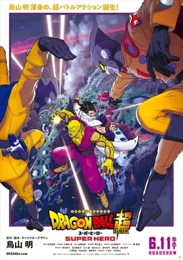

The genetics
Genetics is marginal. The villains' weapons are artificial beings created by Dr. Hedo: the androids Gamma 1 and Gamma 2 and the giant bio-android Cell Max, built from his grandfather's plans for Cell, a creature from earlier Dragon Ball stories. The sources describe them as androids and bio-androids without saying that genetic engineering is involved, and the story treats them as superhero action figures. The film presents their creation as dangerous in the hands of the Red Ribbon Army but redeemable, as the misled scientist Hedo turns against his employer and ends up working for Capsule Corporation.
The story
Commander Magenta, head of Red Pharmaceuticals, revives the Red Ribbon Army and recruits Dr. Hedo, the superhero-obsessed grandson of Dr. Gero, by persuading him that Capsule Corporation is an evil organisation. Hedo builds two androids, Gamma 1 and Gamma 2, and, from his grandfather's plans for Cell, the giant bio-android Cell Max. With Goku and Vegeta training on another planet, Piccolo infiltrates the Red Ribbon base and has a Dragon Ball wish unlock his potential. When Magenta plans to kidnap Gohan's daughter Pan, Piccolo stages the abduction himself to provoke Gohan, who overwhelms Gamma 1, while Piccolo convinces Gamma 2 that the Red Ribbon Army are the real villains. Magenta prematurely activates Cell Max and is killed by Hedo. The heroes and the Gammas fight the monster; Gamma 2 sacrifices himself, and Gohan, in a new 'Beast' form, destroys Cell Max. Hedo and Gamma 1 are given jobs at Capsule Corporation.